QField workshop
 Developers, Consultants and Teachers
Developers, Consultants and Teachers
C++, Python, QGIS, QField, PostGIS, Android, Ili2DB, Webmapping, ...
Marco Bernasocchi - OPENGIS.ch CEO - QGIS.org Chair - OSGeo board member
Why mobile GIS?

Because
data is
outside the office
 Efficiency
Efficiency
 Complex cartography thanks to zooming
Complex cartography thanks to zooming
 Direct data editing
Direct data editing
 Hardware integrations
Hardware integrations
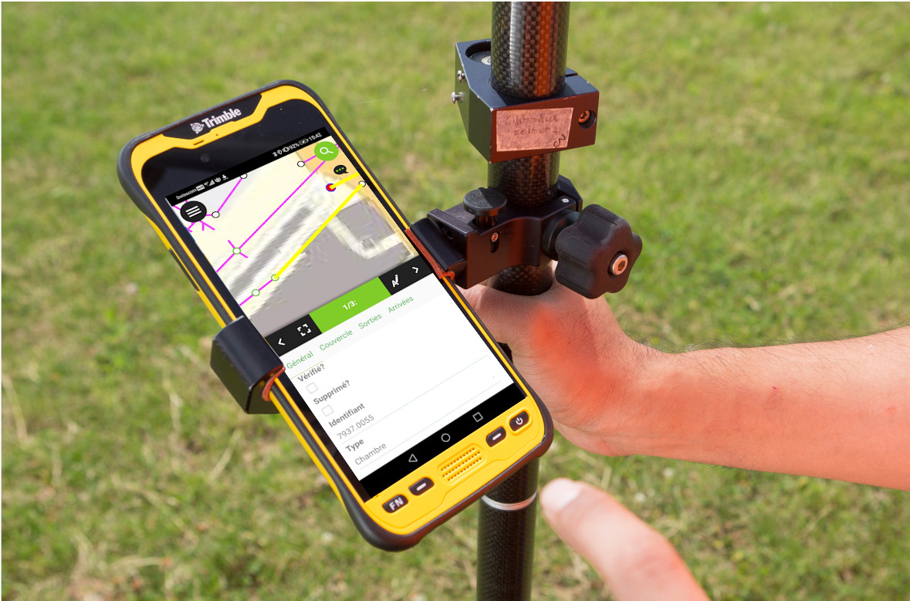
Realtime location awareness
Why QField?
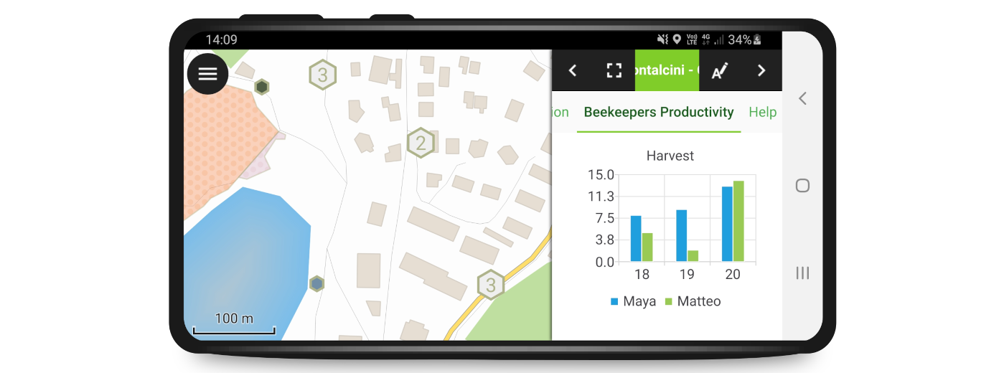
Fieldwork needs efficiency
 Even in difficult situations
Even in difficult situations
 Remember:
Remember:
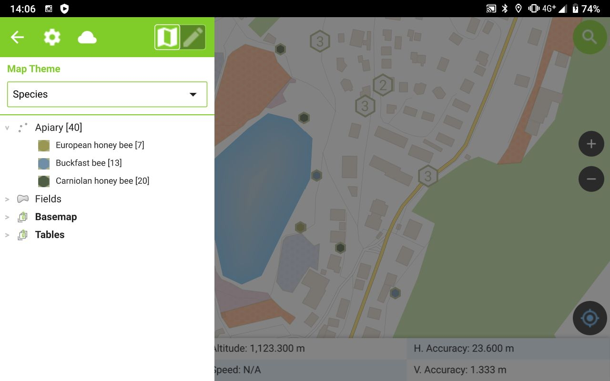
Optimise projects
 Focus on important attributes
Focus on important attributes
simplify input forms
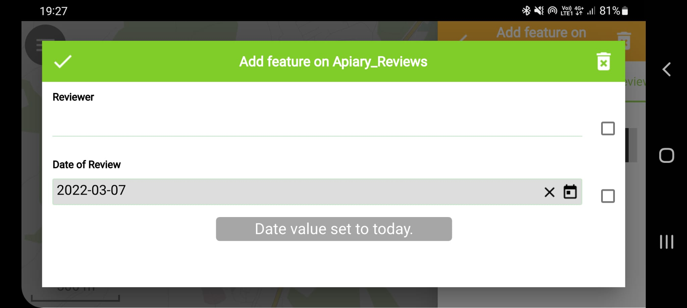
use default values
 set constraints
set constraints
Howdoes it work in QField?
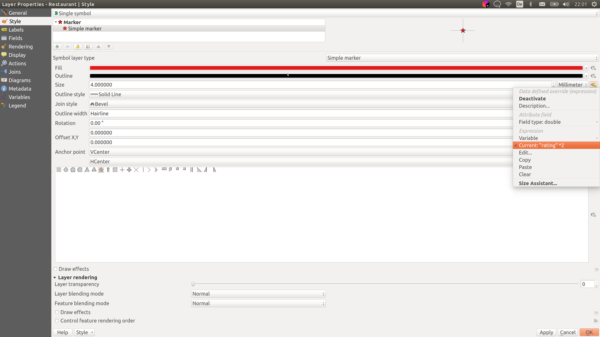
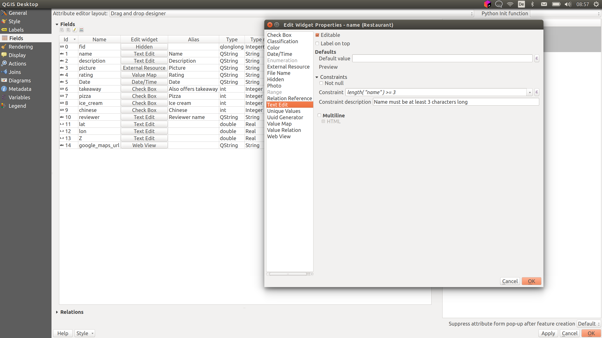
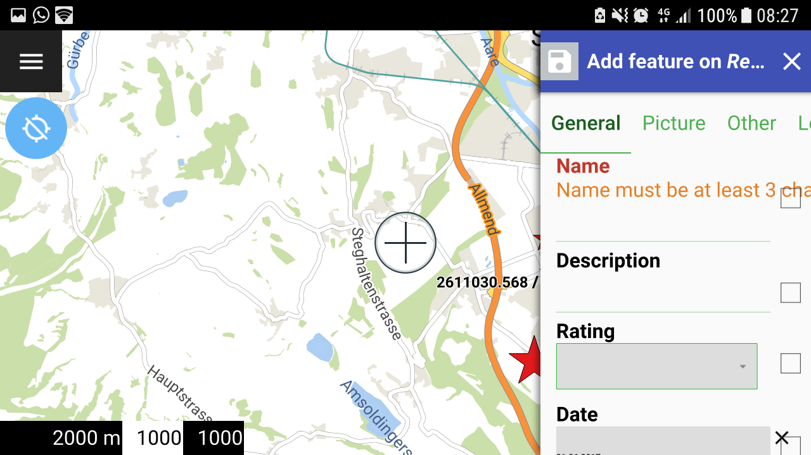
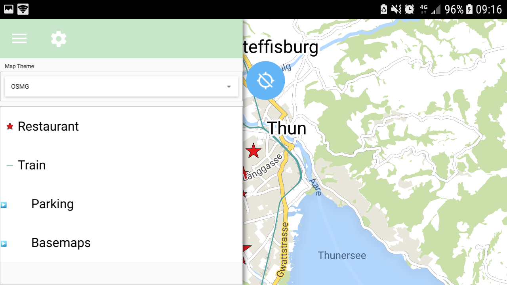
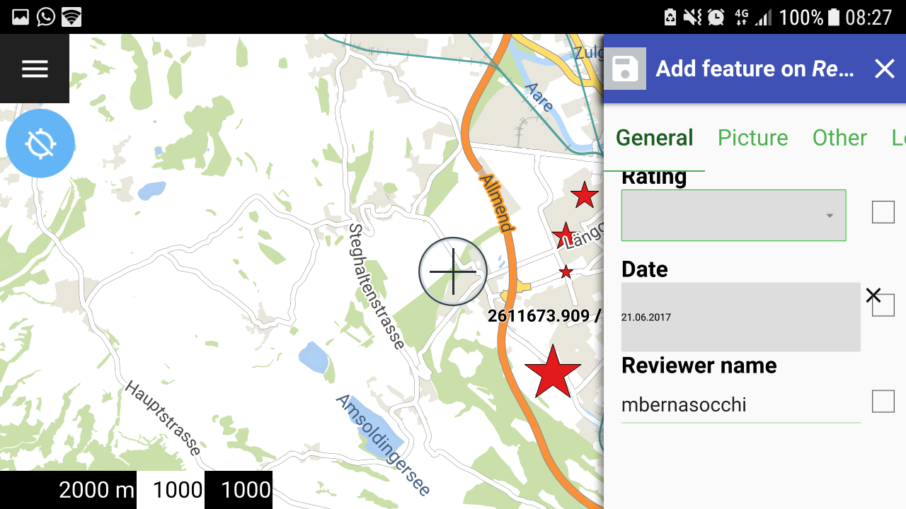
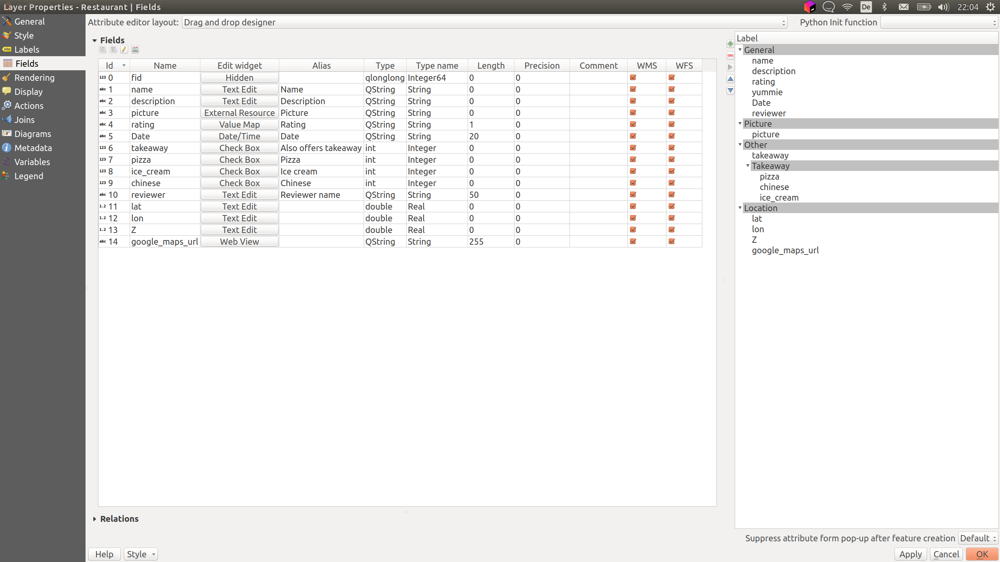
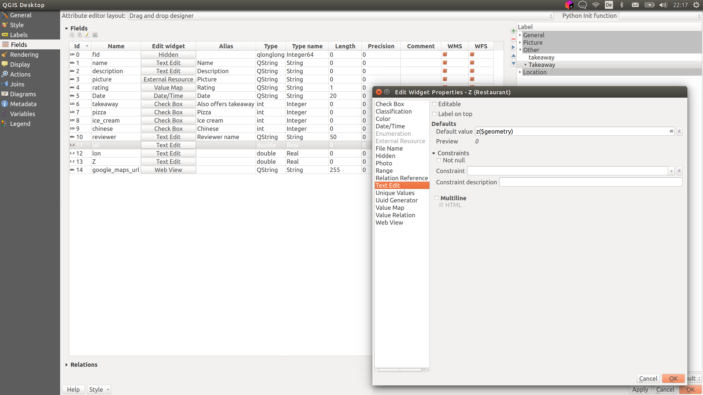
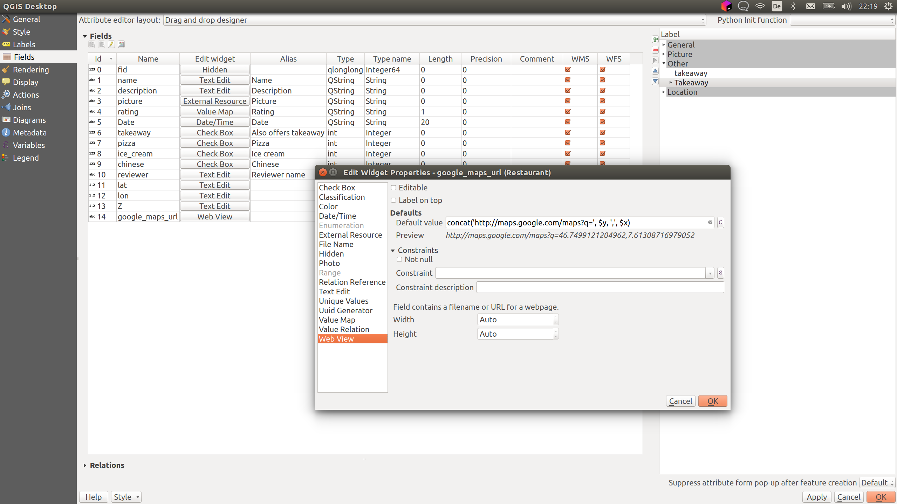
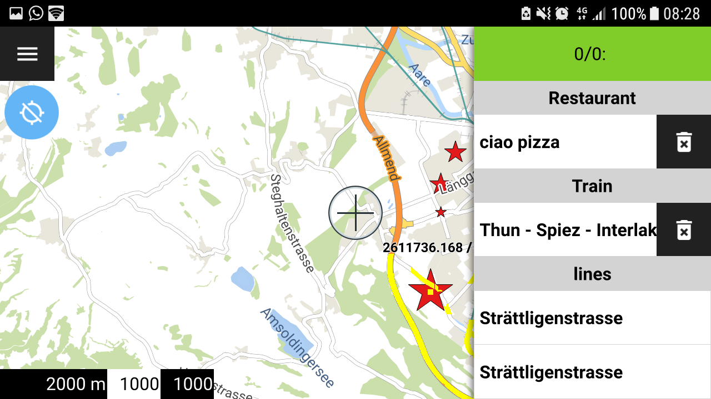

Help us
fund the work